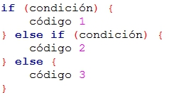

|
|
| Actividad:
Desarrollando
programas en C No. 2. Unidad: Estatutos condicionales. |
|
| Descripción | |
 |
|
| Modalidad | |
 |
|
| Objetivos de la actividad | |
 |
|
| Instrucciones | |
 |
Forma de trabajo:
Utiliza el siguiente
esquema como apoyo para desarrollar tus soluciones:

Ejercicio 1 Desarrolla un programa en C que determine la velocidad (v) alcanzada por un automóvil en una distancia (d) y un tiempo (t). Estas últimas 2 variables son dadas por el usuario.
Ejercicio 2 Desarrolla un programa en C que despliegue el resultado de evaluar la siguiente función con el valor dado por el usuario. 
Ejercicio 3 Desarrolla un programa en C que imprima el mensaje apropiado para una temperatura dada por el usuario. Los mensajes a imprimir serán los siguientes:
Incluye el algoritmo como comentario al inicio del programa. Programa Abierto: Desarrolla
un programa en C con el tema de tu preferencia (diferente a los que se
plantean en el laboratorio) que involucre al menos 3 niveles de
decisión, usa todas las formas de If else. Este programa es tuyo, úsalo para hacer cosas interesante y retadoras no cosas fáciles. |
| Recursos | |
 |
|
| Especificaciones de entrega | |
 |
|
 |
|
| DR© Tecnológico de Monterrey Campus Querétaro| Departamento de Desarrollo Académico| México, 2012 | |